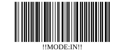
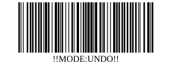

Print at 100% scale, cut along the cards, and tape them where you use the scanner. Scanning one switches the mode; it stays in that mode until you scan the other one.

Everything scanned after this goes INTO the pantry sheet.
!!MODE:IN!!
Everything scanned after this leaves the pantry and lands in the Frisco cart queue.
!!MODE:OUT!!

Reverses the most recent scan. Does not change the current mode.
!!MODE:UNDO!!